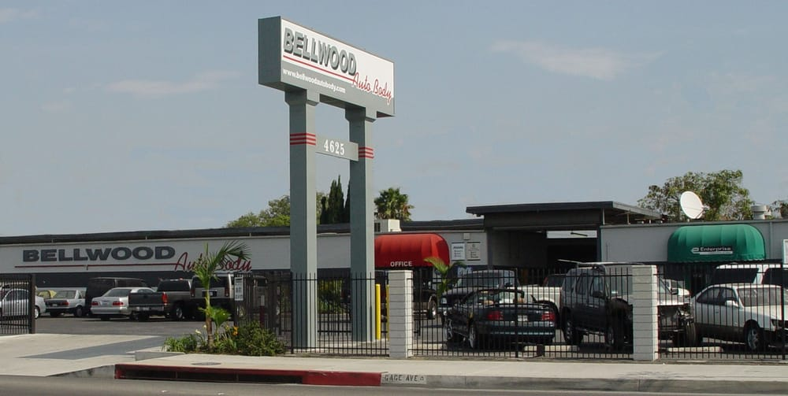
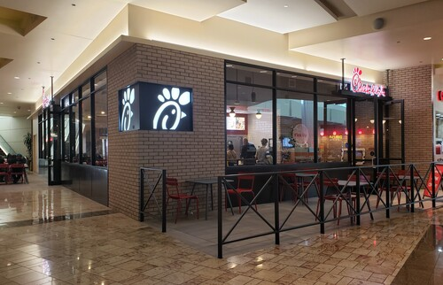
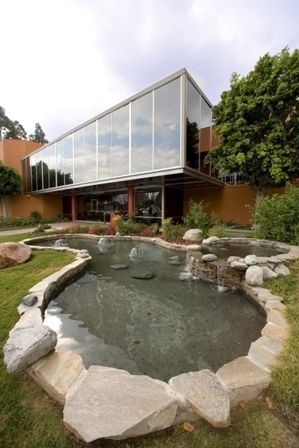

About me
I love keeping up with Economics, Social Media Trends, Machine learning, and Innovation. Learning and Development is the foundation of my personal and professional life, I believe taking on continuous learning and new endeavors fuels an exciting career and life!
I have been very lucky and grateful to be exposed to various industries in my Personal and Professional career, learning as much as I can along the way.
Industries
Automotive & Industrial Refinish
Growing up I always went to work with my father for as long as I can remember. As soon as I got my driving permit my father will have me as a chauffeur going to at least 7 body shops in LA every day on the summer 2018. He is Senior Account Manager and I got to see my father interact with Body Shop owners and saw how Body Shop owners ran their businesses each more differently than the next. Different people meant different cultures, needs, and ways they run there business.
My father’s relationships with his customers were more personal than professional, there I realized sales is more than just products and services but going the extra mile to keep a person’s business. In this the people business is the side of the business that not everyone comprehends unless they are going that extra mile for there clients. He was always proactive and going the extra mile for new and current business, these are the values I stuck with and has helped me beyond my personal and professional career.
What I learned with him was how to build relationships, maintaining relationships, going the extra mile, and people.
I met so many Body Shop owners during this time and have close relationships with some since they saw me as a child. I actually worked at a family friend’s shop, Bellwood Auto Body, in Bell Gardens for 1 Month in the Summer 2019.

Retail
My first job was at 17 working at Sears 2019, I worked as a backroom/front associate. The company already filed for bankruptcy at the time so half of my time in this role was closing the store and liquidating assets.
Sales, Customer Service, and Productivity are the strong traits I carry since I like meeting new customers and helping them with their needs at the store. For me it was always important to always be doing something as my mindset has been, ” Someone is always watching”. As the store came to a complete close, management wanted me to transfer with them to the Whitter location however my heaviest semester at Community College was coming up and I did not want to comprise my GPA for a job, so I declined and moved on focused on finishing my associates.
What I learned was customer service, patience, productivity, and putting previous sales techniques to practice.
Quick Service Restaurant
As I was accepted into California State University of Fullerton in Spring 2021, I also accepted a role as Team Member at Chick-fil-A were 4 months Later, I was promoted to Shift Leader.
I was lucky to be in charge of the store feedback system and training. My responsibility was to collect feedback from customers through QR codes on store receipts, maintain a better average than the stores around the area, and resolve customer disputes on okta which is what the store used for it’s operations.
As a franchise well-known value is customer service and the infamous ” My Pleasure” training associates during the closing shift was a responsibility that was passed down to me. New associates constantly needed training as QSR turnover rate is high.
As I passed a year of employment, My last semester at California State University of Fullerton was a heavy spring schedule and a summer semester of 2 classes. I put my 2 weeks in to focus final semesters of my bachelor’s.
What I learned was going beyond listed responsibilities, learning and development, leadership, and maintaining a positive profit rate through the hours of the day.

My second role in QSR was at a support center for Panda Restaurant Group. My last 2 Months in college I was very lucky to obtain the role of Learning & Development while in the last weeks of my degree. This was a unique opportunity and I learned so much from this role, supervisors, and team members.
See I was always quiet in seated environments, most of my education journey was spent in the library finishing assignments and leaving when the library closed. I have customer service & leadership skills but not personal communication skills were I can use to network with colleagues. It can be hard to believe but I could not even look at people in the eyes when walk past them I just kept my head down. I always performed my duties and exceeded expectations however the socializing aspect of the job I struggled
My supervisor was able to get me outside of this comfort zone and it helped me tremendously. I was able to have conversations with people and maintain eye contact without sweating. I was able to speak up and take the lead in an employee benefit project. which lead to a mini email marketing campaign to regional and area leaders in operations. As well as create and maintain our internal community discussion forums.
What I learned was Interpersonal Skills, Project Management, Group Collaboration, Administrative Work, and Networking.

Real Estate
Leaving my corporate role to focus on my master’s was a choice I was excited and nervous making, as I am completing my degree I was able to obtain a role as a Marketing & Leasing coordinator for Asset Living. Here I put some Digital Marketing skill and techniques to practice, though digital marketing can be learn without a degree my program focuses on Marketing analytics and science. I had the responsibility of reporting insights on content as well as producing content to publish on our Instagram page. I also created our wait list with a Google form that allows us to lease any open availability as well as have leads for the next school year.
What I learned was Marketing Outreach, Marketing Insight, Content Creation, and Leasing Administration